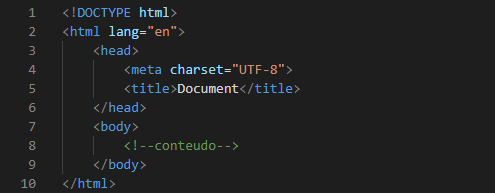
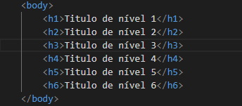
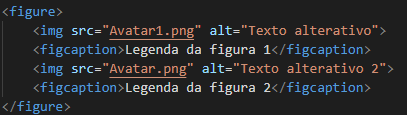
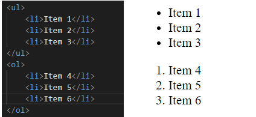

Este artigo tem como objetivo apresentar os conceitos básicos para o desenvolvimento de páginas Web utilizando a linguagem html, com o intuito de possibilitar que você seja capaz de criar seu primeiro site.
Por esse motivo este arquivo está dividido nos seguintes topicos:
HTML ou Linguagem de Marcação de HiperTexto (do inglês, Hypertext Markup language), por mais que muitos possam pensar, não se trata de uma linguagem de programação,
mas sim, como explícito no nome, de uma linguagem de marcação, a qual utiliza de elementos denominados tags para estruturar e definir como o conteudo do site irá aparecer para o usuário.
Desse modo, quando acesssamos sites ou aplicações Web, o navegador renderiza esses arquivos escritos em HTML para saber como será apresentado o conteúdo.
Por consequencia disso, podemos dizer que a linguagem HTML é o "esqueleto" ou a essência do site, visto que é impossível construir uma pagina Web sem HTML.
Estrutura básica de documento HTML.
A estrutura básica de um documento HTML é construida por tags, como pode ver na imagem abaixo, que são necessárias para que o documento seja renderizado corretamente pelo navegador.

Imagem 1. Estrutura básica de um documento HTML.
Fonte: Do autor.
Como citado acima, a estrutura básica de um documento HTML contém determinadas tags que são essênciais para que o navegador possa interpretar o documento corretamente, elas são:
<!DOCTYPE hmtl>:Essa tag deve ser escrita sempre na primeira linha, pois é a partir dela que o navegador interpreta qual versão do HTML a pagina está escrita.
<hmtl>:A abertura e o fechamento dessa tag delimita o documnento, ou seja, tudo que o site conterá, nesse contexto, todas as demais tags devem estar dentro dela.
<head>:A abertura e o fechamento dessa tag define o cabeçalho do documento HTML, isto é, um espaço onde você pode colocar instruções para o navegador sobre o conteúdo do site sem ser visível para o usuário.
<meta>:Essa tag, nesse caso, especifica qual conjunto de caracteres será usado para renderizar o texto da página. O UTF-8 contém todos os caracteres dos padrões Unicode e ASCII, sendo, portanto, o mais utilizado em páginas web.
<title>:Essa tag define o titulo da página.
<body>:A abertura e p fechamento dessa tag delimita o corpo do documento, ou seja, diferente da tag head nessa vão estar o conteudo que aparecerá para o usuário.
Sintaxe das Tags HTML.
Como explicado anteriormente, um documento HTML é composto por uma serie de elementos, também denominados tags, que são server para anexar, envolver ou marcar
diferentes partes do conteúdo para que o mesmo apareça ou aja de uma certa maneira. Por esse motivo, é importante entendermos como é constituido a estrutura de uma tag.
Contudo, antes de entrarmos nesse contexto, vale a pena relatar que existem dois tipos de tags, as que precisam de tag de fechamento, como a tag <p>, conhecidas como tags compostas, e as que não precisam
de tag de fechamento, como a tag <br>, conhecidas como tags simples.
Dando continuidade, a estrutura de uma tag segue o seguinte padrão, na de abertura temos os sinais de maior ("<") e menor (">") com o nome da tag entre esses sinais. Já a de fechamento segue o mesmo padrão que a de abertura, todavia, com um diferencial,
nela conterá um sinal de barra ("/") antes do nome da tag, indicando que essa é uma tag de fechamento. E por fim, temos o conteúdo que estará entres as tags de abertura e fechamento.
Podemos ter uma visualização melhor de como é a estrutura de um tag com a imagem a seguir:
As tags também podem conter atributos e valores, que podem ser utilizadas desde indentifica-la diferente de outras tags iguais quanto modificar suas caracteristicas, dependendo
do atributo utilizado e dos seus valores. Podemos ter uma ideia melhor desse conceito, analisando a imagem abaixo, onde temos a propriedade "id" (nome do atributo), que comumente é utilizado para diferenciar uma ou mais tags, e o seu valor "myId" que configura como aquela tag será identificada.
Esse bloco tem como finalidade apresentar, além das tags essenciais introduzidas anteriormente, as tags mais utilizadas no processo de desenvolvimento Web.
Formatação de texto
As tags de formatação de texto ajudam a destacar trechos da parte escrita da página, como deixar um texto em negrito ou em itálico
<b> e <strong>: para textos em negrito ou forte;
<i> e <em>: para textos em itálico/ênfase;
<code>: para textos com configuração de códigos;
<samp>: saida de um programa;
<kbd>: entrada via teclado;
<var>: tag para descrever variaveis;
<sup> e <sub>: para trechos sobrescritos e subscrito, respectivamente;
<small>: para textos menores que o padrão;
<mark> para texto glifado.
Cabeçalhos
Cabeçalhos são normalmente utilizados para identificar seções e possuem aparência diferenciada do restante do texto.
No HTML há seis níveis de cabeçalhos/títulos que podem ser utilizados por meio das tags h1, h2, h3, h4, h5 e h6, sendo h1 o maior/mais relevante e h6 o menor/menos relevante.
Nas imagens abaixo é possível ver como utilizar essas tags, bem como o resultado de seus usos em uma pagina Web.

Imagem 4.Diferentes níveis de Titulos. Fonte: Do autor.
Imagem 5.Diferentes níveis de Titulos. Fonte: Do autor.
Parágrafos em HTML
Por meio das tags <p> e </p> é possivel dividir o conteúdo em parágrafos, ou seja, dividir o conteudo em pequenos blocos.
Como podemos ver um exemplo do uso dessa tag e como ela se porta numa pagina Web com as imagens abaixo.
Imagem 6.Utilizando Paragrafos Fonte: Do autor.
Imagem 7.Utilizando Paragrafos Fonte: Do autor.
Imagens no HTML
Utilizando a tag <img> conseguimos inserir imagens em uma página HTML, o qual recebe dois atributos, o primeiro chamado de "src"
(abreviação de, Source) que se encarrega de indexar o caminho/endereço da imagem, e o segundo chamado de "alt" (abreviação de, Alt text) responsavel por descrever a imagem caso ela não seja renderizada.
Outras tags que andam ao lado da tag <img> são as tags <figure>, um elemento que gera um bloco especifico pra inserir uma figura e descreve-lá ao utilizar
a tag <figcaption>, responsavel por criar uma legenda pra a imagem inserida.
Nas imagens 8 e 9 podemos ver um exemplo de como todas as tags apresentadas anteriormente se relacionam e o seu resultado em uma pagina Web.
Na primeira tag <img> é inserido uma imagem existem, e na segunda uma imagem inexistente.

Imagem 8. Exemplo do uso da tag img. Fonte: Do autor.
Imagem 9. Exemplo do uso da tag img. Fonte: Do autor.
Listas no HTML
No HTML, assim como no dia a dia, as lista são elementos uteis para organizar e ordenar itens/tarefas que estão relacionadas.
Sendo os mesmos criados utilizando as tags <ul> e <ol>, lista não ordenadas e ordenadas respectivamentes, e seus itens representados
pela tag <li>.
Nas imagens abaixo, podemos ver como são utilizadas as tags de lista no codigo HTML e como elas ficam representadas numa pagina Web.

Imagem 10. Exemplo do uso de listas. Fonte: Do autor
Links no HTMl
Os links em uma pagina Web são utilizados para direcionar o usuário para outras paginas ou para outra parte da mesma pagina.
Na Liguagem HTML podemos utilizar duas tags para isso, sendo elas:
<link>
Esta tag é usada para estabelecer uma conexão / relacionamento entre o documento atual e alguns recursos externos que estão associados à página da web, comumente utilizado no espaço do cabeçalho
(<head>). O recurso pode ser um arquivo CSS, um ícone usado no site, um manifesto, etc.
Por padrão, essa tag recebe dois atributos, o "rel" (Relacionamento com recurso), Ele especifica qual tipo de recurso
está sendo associado a esta tag. E o "href" (URL), Ele especifica a localização do recurso. Abaixo podemos ver como utilizar essa tag.
Imagem 11. Exemplo do uso da tag <link>. Fonte: Do autor.
<a>
Esta tag estabelece um hiperlink para um documento externo ou interno de HTML, um endereço como e-mail ou telefone e algum tipo de endereço URL externo, comumente
utilizado pelos desenvolvedores dentro do corpo HTML (<body>). Os atributos "rel" e "href" descrito na tag do link também pode ser usado com a tag. Contudo, o mais comum
é o uso somente do atributo "href".
Com a imagem abaixo podemos ver como funciona como é utilizado essa tag no documento HTML. No primeiro exemplo, temos o uso dessa tag para levar o usuário a
outra pagina Web. Já no segundo exemplo, é utilizada para levar o usuario para outra parte da mesma pagina.
Imagem 12. Exemplo do uso da tag <a>. Fonte: Do autor.